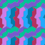

Polydrafters: isohedral number 6
1 shape · each shown with one of its simplest grid-aligned tilings, coloured by orbit · all galleries · family table


16-drafter · k = 6
1 shape · each shown with one of its simplest grid-aligned tilings, coloured by orbit · all galleries · family table
